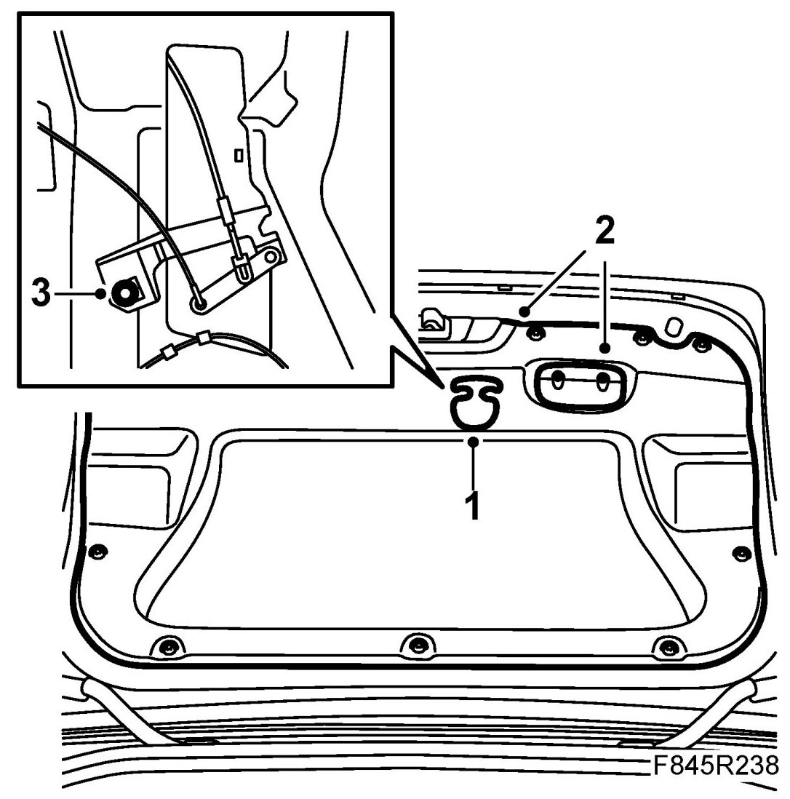
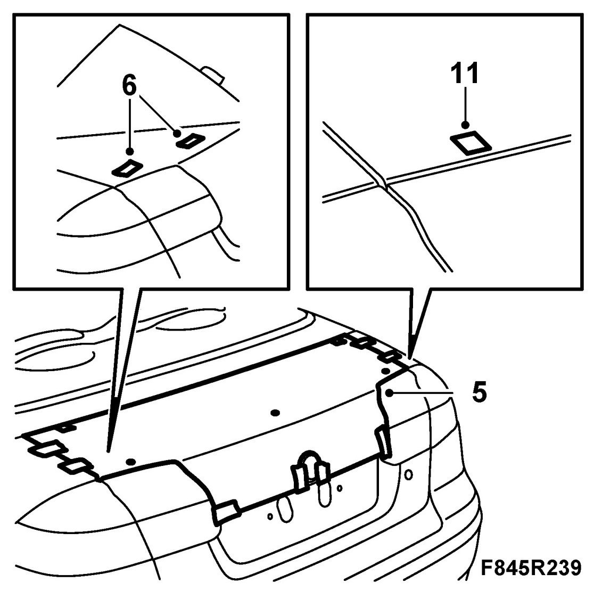
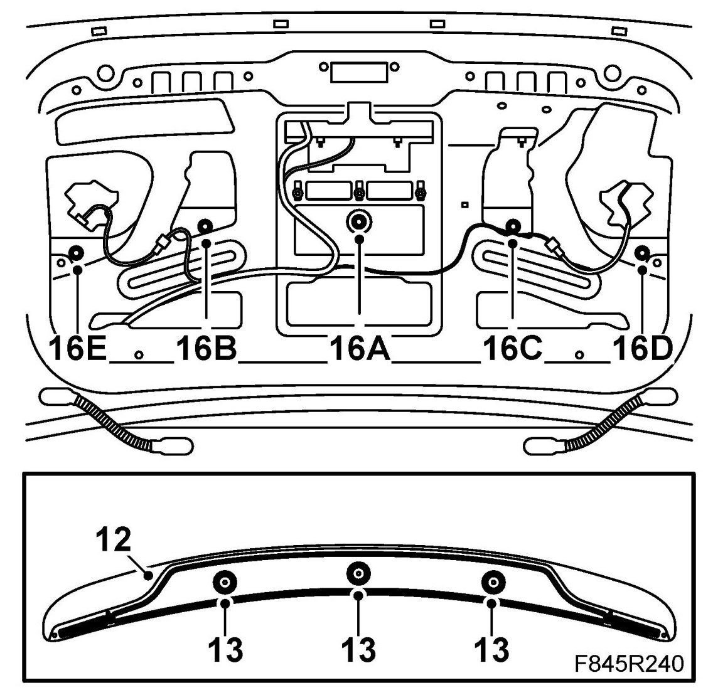
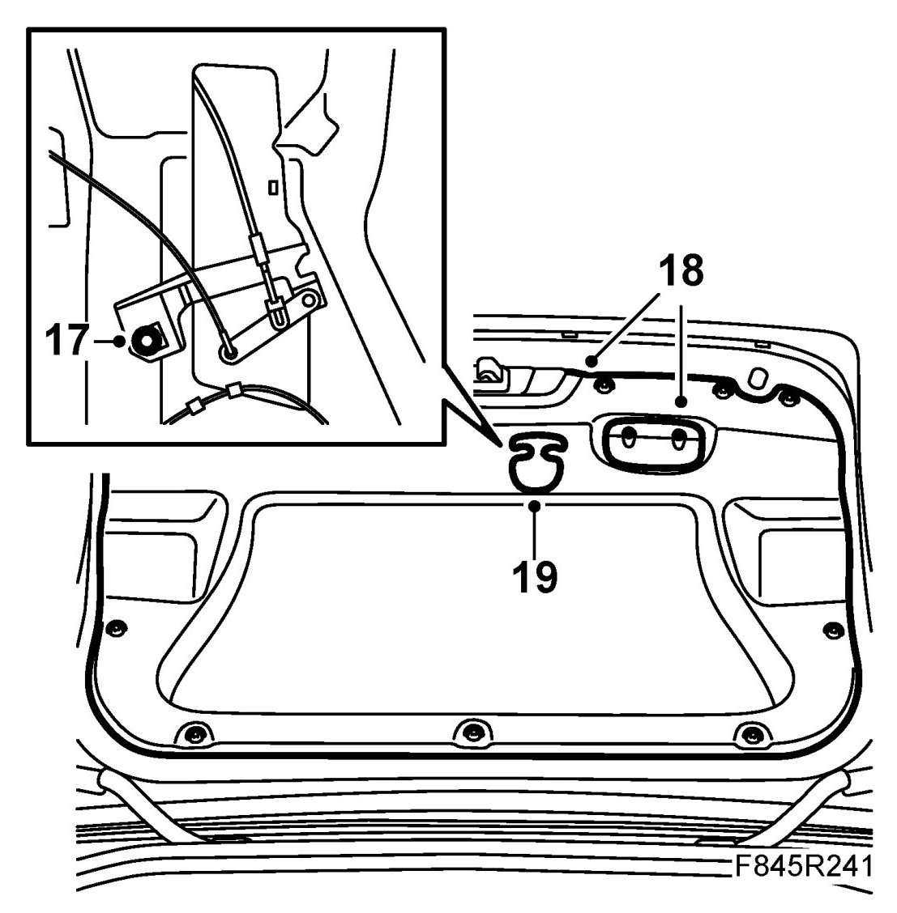

Rear Spoiler, CV (Aero)
Rear Spoiler, CV (Aero)
New spoiler, to fit
1. Open the boot lid.
US/CA: Remove the emergency opening handle from the trim.

2. Remove the closing handle on the inside of the boot lid. Remove the two stage rivets and remove the boot lid trim.
3. US: Remove the bolt for the emergency opening mechanism and move the mechanism aside.
4. Cut out the template sections and tape them together. Align the template sections guided by the lines.
Cars with telephone antenna on the boot lid: Cut out an area around the telephone antenna so that the template can be positioned flat on the boot lid.
5. Position the template on the boot lid and at its four corners. Use adhesive tape to fasten the template at the boot lid emblem and on the front corners of the boot lid. Check that the distance between the hole markings on the template corresponds with the positions of the studs on the spoiler.

6. Lift up the template and fit pieces of tape where the holes are to be drilled (x 5).
7. Reposition the template and affix it with tape.
IMPORTANT: Check the position of the template and adjust as necessary.
8. Drill holes in accordance with the markings.
IMPORTANT: Do not use a centre punch to mark the positions of the holes. Do not press the drill against the boot lid while drilling.
Drill with a 2 mm bit first, then a 5 mm bit and finally a 7 mm bit.
9. Remove the template and the pieces of tape.
10. Deburr the holes and remove loose filings and flakes of paint. Clean using Teroson FL cleaning agent. Apply Standox 1K Primer Filler. Apply the top coat. Apply Terotex HV 400 cavity sealant on internal surfaces.
11. Fit the enclosed pieces of zinc tape to the boot lid.
12. Fit the weatherstrip inside the lower edge of the spoiler in the following way:
- Farthest out on each side.
- Along the front edge of the spoiler between the outer bolts.
- Along the rear edge of the spoiler between the outer bolts

13. Fit the seals on the bolts.
14. Place the spoiler on the boot lid.
15. Hold the spoiler in place and carefully open the boot lid.
16. First secure the spoiler using the five nuts, then carefully tighten the nuts several turns at a time in accordance with the tightening sequence in the illustration (A, B, C, D, E) until the correct tightening torque has been achieved for them.
Tightening torque 4 Nm (3 lbf ft)
17. US/CA: Fit the emergency opening mechanism.

18. Fit the trim inside the boot lid, the two-stage rivets and the closing handle.
19. US/CA: Fit the emergency opening handle.
20. Close the tailgate.
WARNING:
- Because the spoiler juts out over the edges of the boot lid, there is a risk of being pinched between the spoiler and the rear wings.
- Advise the customer of the risk for crushing